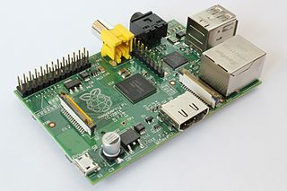

Raspberry PI
V půlce července 2012 mi konečne přišel můj kousek RaspberryPI, který jsem si objednával někdy na jaře. Vzal jsem si tedy dovolenou, na hlídaní dětí jsem si sehnal posily a šel jsem na to.

Čím jsem prošel (a nezapoměl zdokumentovat):